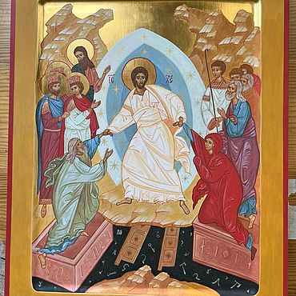

|
Главная |
Цены |
О себе |
Оформление заказа |
Контакты |
тел.: +7 926 597-45-88 |
Факеева Татьяна |
 |
- Россия, Москва
- Более 6 лет работы
- Более 500 работ
- В 5 монастырях и храмах
- Виды творчества: Роспись, Фотография, Работа по камню
-
Магазин
Пишу иконы по православным канонам, используя только натуральные пигменты (темперу), растирая их с яичной эмульсией курантом на стекле. Иконы покрываю олифой. Это рукоделие очень люблю, за все благодарю Господа!!! Пишу по благословению и с молитвой. Люблю в процессе работы над иконой посещать Храмы с мощами Святых, образы которых пишу, или с их чудотворными иконами, когда это возможно. Все иконы после написания освящены. Иконопись - это целая жизнь!!! Пишу все виды икон НА ЗАКАЗ - Спасителя, Богородицы, всех Святых (в том числе редко встречающихся и иконы Святых Новомученников), мерные иконы, венчальные пары, семейные иконы, иконы Праздников.
Размеры - любые. Если Вам молитвенно откликается какая-либо из моих икон, но она представлена в другом размере, пишите, звоните, - обсудим возможность и сроки написания иконы по требующемуся размеру.
Строго каноничную иконопись предпочитаю академическому письму.
В случае, если Вы уже знаете, с какого образца хотите иметь рукописную икону, рассматриваю Ваши пожелания, но также предлагаю образцы для выбора, которые более откликаются в моей душе.
Применяю золочение на полимент (варианты: нимб, поля, фон, все на золоте) . Выполняю резьбу и чеканку сложных орнаментов по золоту. Используемое сусальное золото (белое, желтое или красное) - 960 пробы марки Раритет или 23 карата марки Noris.
Роспись одежд провожу ассистом или твореным золотом.
На оборотной стороне возможно выполнить дарственную надпись (по какому случаю и к какой дате написана данная икона). Для подарочной упаковки могу предложить бархатные или замшевые футляры.
Возможен подбор киотов. Могу предложить подбор киотов полностью ручной работы.
Пишу стихи православной тематики в качестве поздравления к Праздникам и делаю открытки ручной работы по этому поводу. Занимаюсь росписью по камню (в основном крупной плоской белой гальки, специально отобранной для этой цели в паломнической поездке в Болгарию) с изображением различных православных Храмов.
Всегда рада видеть Вас в своем магазине и буду счастлива любому сотрудничеству!
Срок выполнения работ и цены:
Примеры работ
- Иконы для домашней молитвы
| Венчальные пары (Иконы Христа и Богородицы) |
| |
 |
 |
 |
Иконы святых |
| |
 |
 |
 |
Мерные иконы |
| |
 |
 |
 |
Семейные иконы |
| |
 |
 |
- Храмовые Иконы
| Однофигурные |
| |

| 
|
Многофигурные |
| |
 |
 |
Иконы праздника |
| |
 |
 |

|
Иконы на заказ. Срок выполнения работ и цены
| Размер |
Срок исполнения |
Диапазон цен |
| 9*10 |
3-5 дней |
4500-5000 |
| 13*14 |
7-10 дней |
6000-9000 |
| 17*21 |
10-20 дней |
7500-15000 |
| 20*30 |
15-30 дней |
10000-20000 |
| мерные |
15-30 дней |
13000-25000 |
| аналойные (от 30*40) 1святой |
20-40 дней |
20000-35000 |
| аналойные (несколько Святых, иконы Праздников) |
3-6 недель |
25000-40000 |
| семейные иконы |
2 недели-2 мес. |
от 10000 в зависимости от сложности, количества Святых и размера |
| венчальная пара |
2-4 недели |
от 10000 (в зависимости от размера икон) |
По возможности с заказчиками встречаюсь лично (возможна доставка на дом), по России и Зарубежью - доставка Почтой
ВНИМАНИЕ! Стоимость на иконы под заказ уточнять по телефону, на сайте могут быть неактуальные цены в связи с ежедневными изменениями стоимости материалов.
Связаться со мной